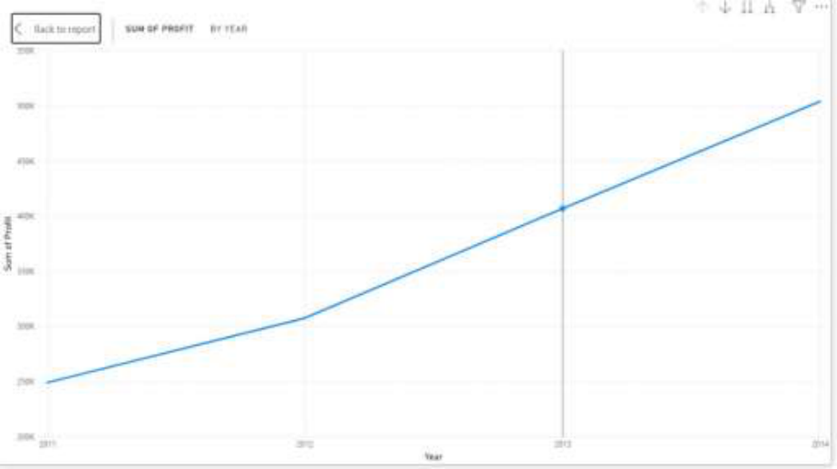
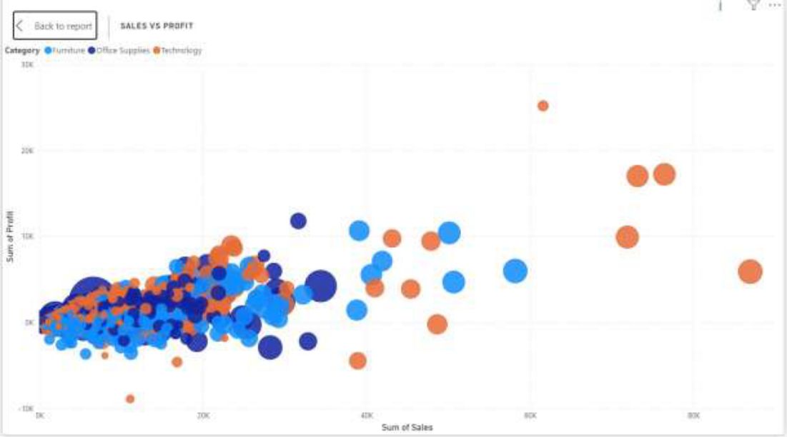
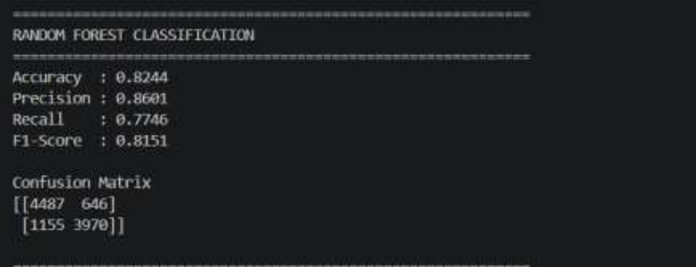
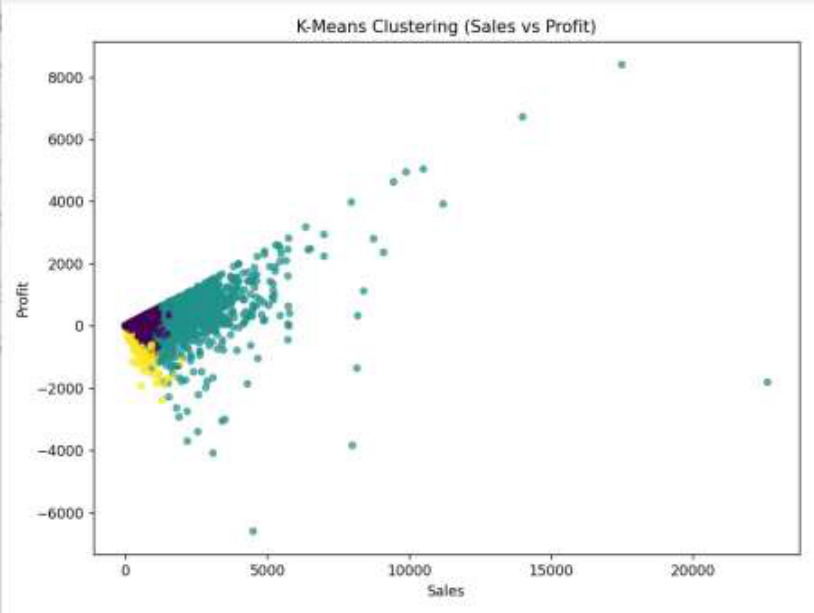

CASE 02 / DATA ANALYTICS
Retail Sales & Profit Analytics
Global Superstore transactions: explore sales and profitability, classify profit levels, and discover transaction segments.
Prepare a trustworthy dataset
The Global Superstore dataset includes sales, profit, products, customers, shipping and geography. Assignment 2 focused on exploratory analysis in Power BI; Assignment 3 reused the cleaned data for machine learning in Python.
Assignment 3 reported 51,290 observations and 24 variables after preprocessing, with no missing values detected. A profit class target was created using the median profit as the threshold.
Explore sales and profitability




Business findings
- Overall profit increased from 2011 to 2014.
- High sales do not necessarily translate to high profits: some products with substantial sales had low or negative profit, and the report also identified loss-making transactions.
- Products with higher average discounts can have low or negative total profit.
Suggested follow-up: monitor margin alongside revenue and review discount policies for loss-making items.
Supervised learning: profit classification
Created High Profit and Low Profit labels using the median profit threshold. Selected predictors included sales, quantity, discount, shipping cost, shipping days, product category/sub-category, segment, market and region. Profit itself was excluded from the predictors to avoid directly revealing the label. The report used an 80/20 train–test split.
Test accuracy


Random Forest performed best on the reported test set. These results describe the project dataset rather than guaranteed performance on unseen business environments.
Unsupervised learning: transaction segments
K-Means grouped records using sales, quantity, discount, shipping cost and shipping days. The Elbow Method supported selecting K = 3. Sales and profit were used to visualize the resulting clusters.
Cluster membership (51,290 records)
| Cluster | Records | Interpretation |
|---|---|---|
| 0 | 44,340 | Routine transactions |
| 1 | 2,800 | High-value transactions |
| 2 | 4,150 | Heavily discounted transactions |


Potential applications include protecting the margin of heavily discounted transactions, maintaining availability for high-value purchases, and monitoring the performance of routine transactions.
Power BI vs Python
Assignment 4 evaluated both tools on the same Global Superstore dataset, comparing their input capabilities, preprocessing, visualization, ease of use and licensing.
| Dimension | Power BI | Python |
|---|---|---|
| Preparation | Visual transformations using Power Query | Programmable cleaning and feature engineering |
| Visualization | Interactive business reporting | Flexible plots and custom analytical workflows |
| Accessibility | Graphical interface for beginners | Coding skills required; flexible automation |
The group recommended Power BI for accessible business intelligence reporting and Python for flexible, advanced analytical tasks.
My documented contribution
Assignment 2
- Assisted in data preparation.
- Supported dashboard development and verified analytical results.
- Contributed to presentation preparation.
Assignment 3
- Participated in supervised learning and clustering analysis.
- Contributed to data visualization, report writing and formatting.
Source & scope
Data Analytics, Group 4 — Assignment 2 (25 June 2026), pp. 2, 9–16; Assignment 3 (16 July 2026), pp. 2, 10–20; Assignment 4 presentation (31 July 2026), tool comparison and mini-case slides. Visuals are cropped from group reports; remaining charts are reconstructed from reported values. Full dashboard files and code are not included.